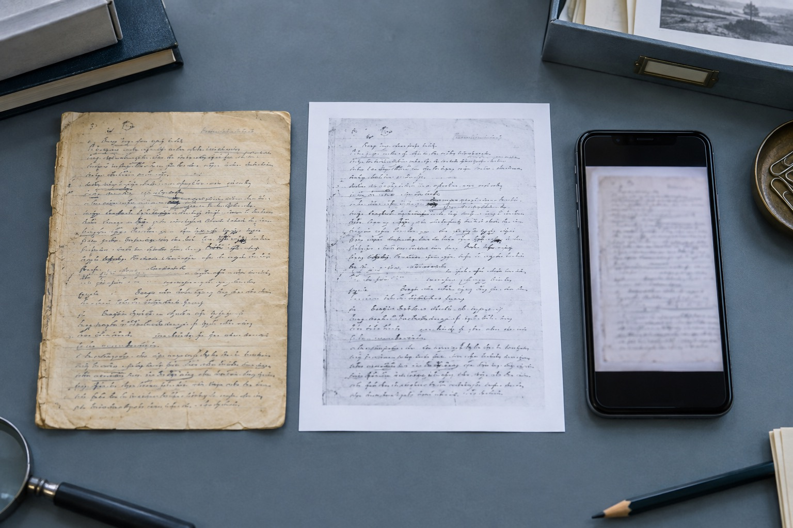

原件、扫描件和聊天截图排成一列，笔迹鉴定先从图像来源说起
原件、扫描件与聊天截图保留的信息不同，先标明来源和转发过程，后续查看才不会混淆。

复制方式决定能看见哪些信息
原件保留纸张与墨迹的实际状态，扫描件将页面变成平面图像，聊天截图又加入了显示缩放和压缩。三者排在一起时，应先说明获取方式，再讨论细节。笔迹鉴定所需的材料形式要向接收方确认，不能用一张清晰截图代替原件状态说明。
原始版本怎样留住
电脑里可以同时保留扫描原文件和方便发送的缩小副本，文件名直接区分用途。涉及模仿笔迹的连续页面时，每页使用固定页码；模仿签名与模仿签字的局部图沿用所在页的编号。这样即使聊天预览变模糊，仍有可回查的原始文件。
提交前的一项核对
复制方式决定能看见哪些信息，需要注意什么？
原件、扫描件与聊天截图保留的信息不同，先标明来源和转发过程，后续查看才不会混淆。可先按这一点核对现有材料，再说明目前缺少的内容。